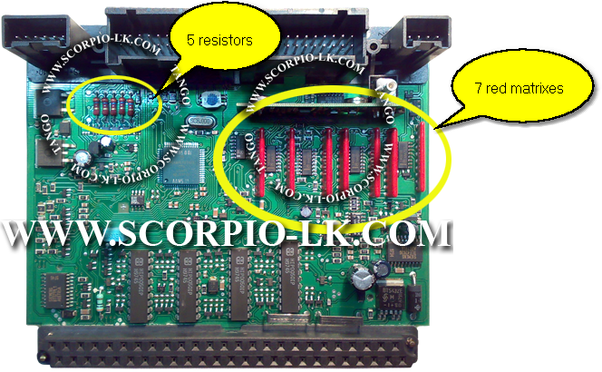
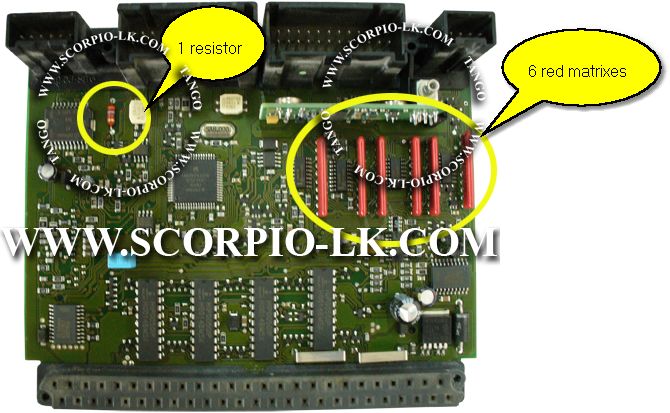
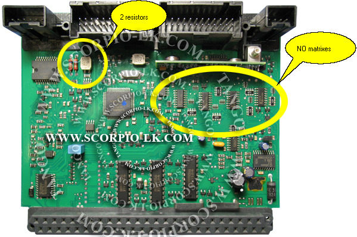

|
AAM-EAM: Distinction |
Top Previous Next |
|
AAM unit this AAM unit has key data in the Motorola processor, read it and make a key.

FALSE AAM unit this AAM unit has no key data in the Motorola processor. Search for the EAM unit.

FALSE AAM unit this AAM unit has no key data in the Motorola processor. Search for the EAM unit.

|